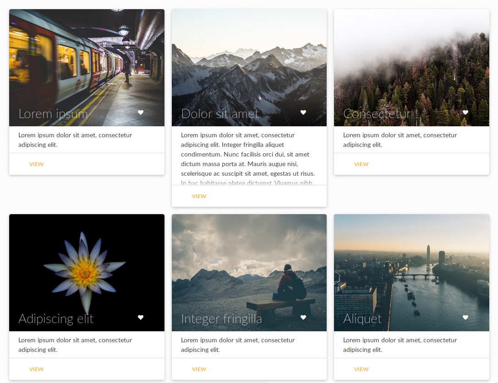
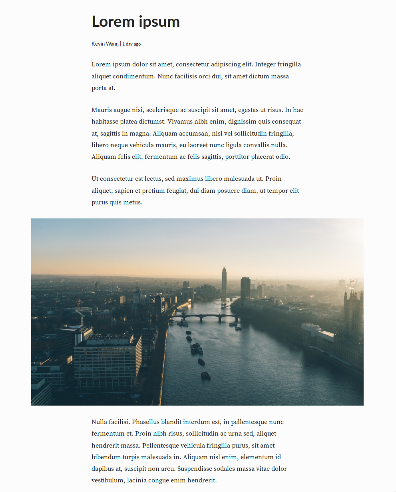
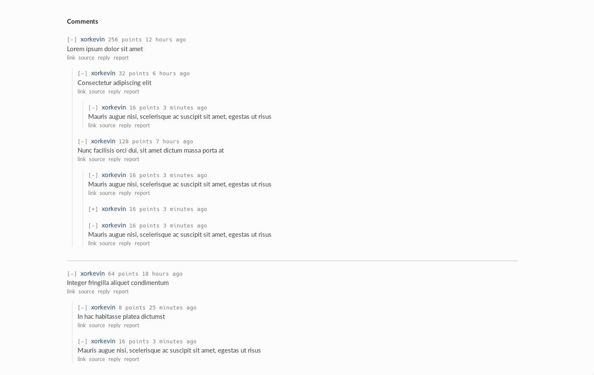

Nuke
frontend for governor
Kevin Wang
Last modified 2019-05-22 Tue, Apr 10, 2018 · 494 Words 3 min read Permalink · RepoNuke was designed as a frontend for the Governor web framework project. I wanted to build a UI that could facilitate testing the numerous services that compose Governor. However, as the project grew, I wanted to also componentize various UI elements for future reuse. Thus, Nuke became its own UI library, which I have since used in many other projects, including the LAHacks application system, UCLA DevX internal tooling dashboard, and this blog itself.
If you would like to interact with a demo, one exists here: https://hackform.github.io/
Typography
Typography was an integral part of Nuke from its inception and it still forms the bedrock of its design today. First, I wanted to pick a font that was boring. I needed a font that would get out of the way quickly and let the focus be on the content. I ultimately chose Lato and Source Serif Pro.
I then proceeded to build a responsive visual hierarchy in SCSS based on the
rem unit. This is to make Nuke easier to maintain. rem allows all text on
the screen to be based on the body font size, i.e. when the body font size
changes, the rem unit will change proportionally. As such, for all
font-sizes given in rem, only the the font size for the body must be
changed in media queries, allowing all text to be responsive at every
resolution.
Components
Form Inputs
Interactivity is a necessity in almost every website, thus one of the first set of components that I designed consist of input fields and buttons. I particularly like the simplicity that Material design brings, thus I took many cues from it.

Cards
They seem to be all the rage these days. It feels as if I was almost obligated to create them.
Articles
Articles were created purely for fun, taking many cues from Medium, which I think executes long form content perfectly.
Comments
Reddit is one of my favourite online forums because of all the discussion that occurs in its various communities. This discussion would not be possible, however, without its well renowned comment thread design. Unlike in a traditional forum, the Reddit comment system simplifies viewing replies by placing them adjacent to their parent, and move the best replies to the top. I try and replicate this system myself in Nuke.
Dark Mode
I am a firm believer in giving users options. I, myself, often work late into
the night and the light from a bright white background can be bothering if not
for your roommates who are trying to sleep, then for your own eyes. As such a
dark mode was a feature that I strove to implement. It is made maintainable by
using SCSS to style elements if they are the children of a body.dark. Thus
only the class of body needs to be changed to enable dark mode.
Nuke has made it easy for me to bootstrap new projects without having to reimplement common UI components from scratch.
web frontend react js